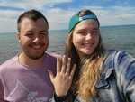
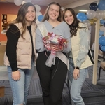

Our Process
The Proposal
 My husband proposed to me on a trip to see the UP. We were in Sault Ste. Marie looking at the locks. He asked me with a green moss agate ring! This was our first overnight trip together, and our second trip to the UP.
{kind=link}
The Bridal Shower
 My family threw me a bridal shower. The men in the family made the food in the kitchen while the women invited were able to play games. I was lucky enough to have my husband-to-be there to play games with me! we played the shoe game where people ask us questions and we hold up the shoe of the person we think best fits.
{kind=link}
The Wedding
Our wedding took place on February 4th of 2023. We had our ceremony in an intimate chapel with about 60 of our closest family and friends. We then transitioned to a wedding reception of about 120 people. I loved seeing most of the people I care about most in one place! My family worked together to provide the food for us, and because of that it was all just delicious food! Because I am not a fan of cake, I also had a cookie bar at our dessert table.
{kind=link}